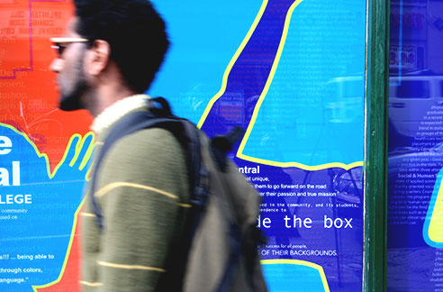

Seattle Central College
Branding . Environmental Design . 2010
I partnered with another designer to design and execute a vinyl window display for Seattle Central College. The task was to brand this off campus building as a part of the college and reflect the vibrant character of its neighborhood.
The challenge
The primary goal was to communicate the large impact this small college has on its community. We collected quotes from students and showcased them in the design. The bold colors and dynamic shapes reflected the vibrant and diverse audience.




More Work

PicMonkey - Mobile Touch Up

Experimental Typography

ArtsFund + Getty Images

Getty Images - Employee Portal Update